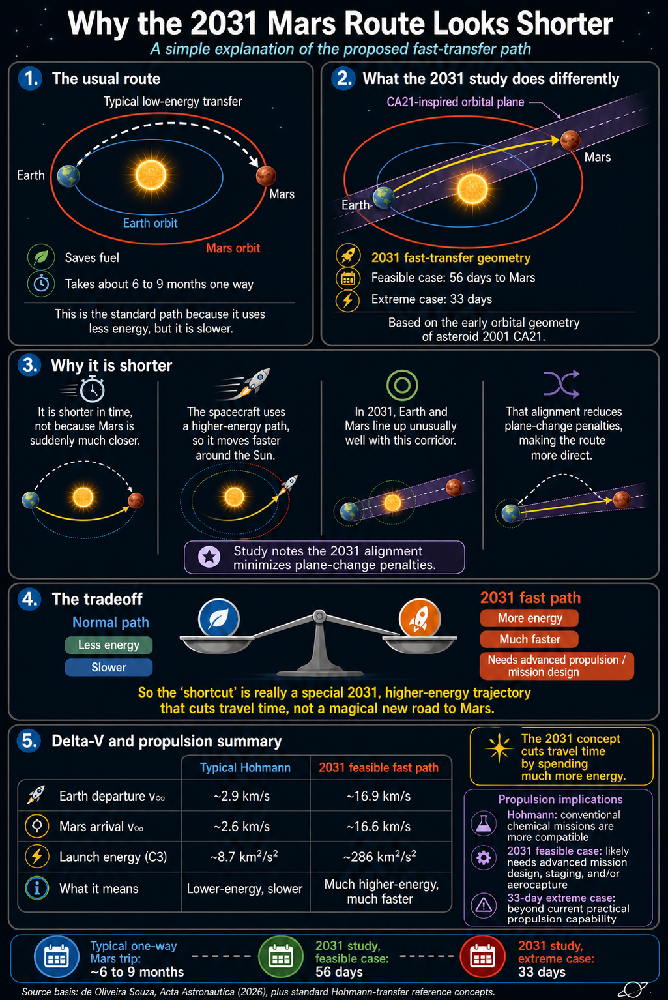

Simple answer
The proposed 2031 path is shorter in time, not necessarily shorter in physical distance.
A normal Mars transfer uses a low-energy arc around the Sun. The 2031 concept instead uses a faster heliocentric path inspired by the early orbital geometry of asteroid 2001 CA21.
That geometry lines up unusually well with Earth and Mars in 2031, reducing plane-change penalties and enabling very short transfer times.

The usual route
A Hohmann-style transfer is the classic low-energy way to move from Earth’s orbit to Mars’s orbit.
Uses a broad orbital arc around the Sun.
Minimizes fuel compared with faster options.
Typically takes months because the spacecraft coasts along an efficient path.
The 2031 concept
The study uses the early orbital plane of asteroid 2001 CA21 as a template for finding fast Earth-Mars transfer corridors.
Uses a higher-speed path through heliocentric space.
Works best in the 2031 Earth-Mars alignment.
Reduces plane-change waste, but does not eliminate the energy cost.
Delta-V and propulsion summary
The faster route is not cheaper. It demands far higher excess velocity and launch energy.
| Measure | Typical Hohmann | 2031 feasible fast path | Meaning |
|---|---|---|---|
| Earth departure v∞ | ~2.9 km/s | ~16.9 km/s | Much faster departure from Earth’s sphere of influence. |
| Mars arrival v∞ | ~2.6 km/s | ~16.6 km/s | Much harder Mars capture, braking, or aerocapture problem. |
| Launch energy, C3 | ~8.7 km²/s² | ~286 km²/s² | About 33x higher launch-energy requirement. |
| Practical implication | Conventional chemical missions are more compatible. | Likely needs advanced mission design, staging, and/or aerocapture. | The 33-day extreme case is beyond current practical propulsion capability. |
Why 2031 matters
Earth and Mars have launch opportunities roughly every 26 months, but not every window has the same geometry.
The study says 2031 is unusual because the Earth-Mars configuration lines up well with the CA21-derived orbital plane. That makes the fast path more coherent and reduces plane-change penalties.
What “shorter” really means
Shorter in time: yes, because the spacecraft travels faster.
Shorter in distance: not the main point. Mars is not suddenly much closer.
Cheaper in energy: no. The concept is a high-energy sprint.
Trip timeline comparison
Lower energy, slower coast.
Fast path, very high energy.
Geometrically valid, propulsion impractical today.
Sources
- de Oliveira Souza, “Using Asteroid Early Orbital Data for Rapid Mars Missions,” Acta Astronautica, 2026
- Preprint version: “Round-Trip Mars Missions in the 2031 Window”
- NASA, Basics of Space Flight, Chapter 4: Trajectories
Values are rounded for clarity. The 2031 fast-path figures refer to the study’s feasible scenario, not the more extreme 33-day case.